22.10.2026, 20:30, nach deinem Entscheid: K2 für alle Welten, Webinar mit Fragen, Mail und Ansehen, Video bildschirmfüllend. Ein klickbares Mockup auf Basis von Stand 18d, nichts an der App geändert. Entscheidungsseite mit allen Varianten: kauf/.
So läuft es: „Mehr erfahren" klappt ein Angebot auf und setzt den orangen Rahmen. Tippst du beim nächsten Angebot auf „Mehr erfahren", bleibt das vorherige offen mit Preis, nur der Rahmen wandert. Die Leiste unten zeigt „Ausgewählt: RainMaker-Zirkel" und „Jetzt buchen". „Jetzt buchen" führt direkt zum Stripe-Link des Angebots, kein Zwischenschritt mit Apple Pay, Karte, SEPA in der App. Solange kein Link eingetragen ist, zeigt das Mockup eine Stripe-Platzhalterseite. Unten bleibt „Noch Fragen? Schreib uns eine Nachricht".
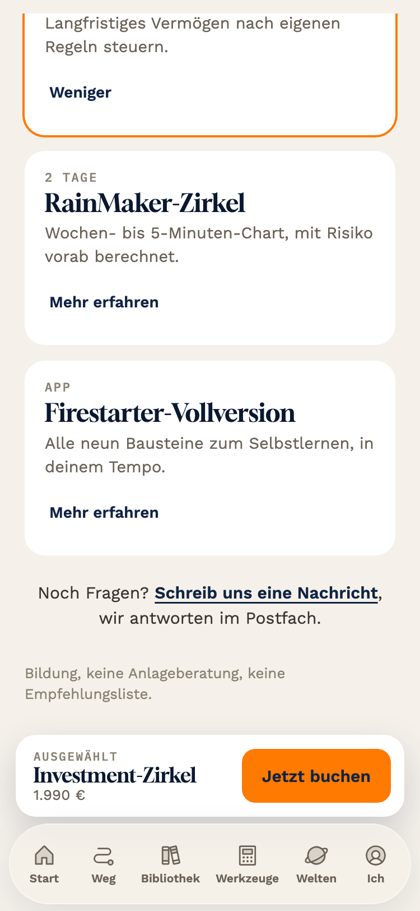
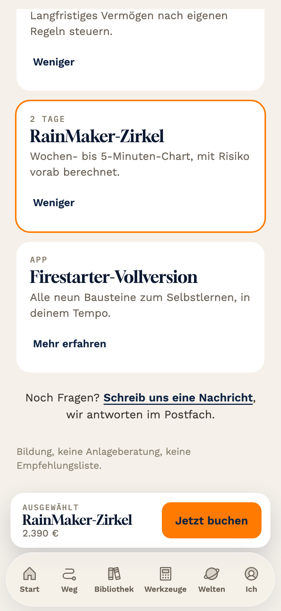
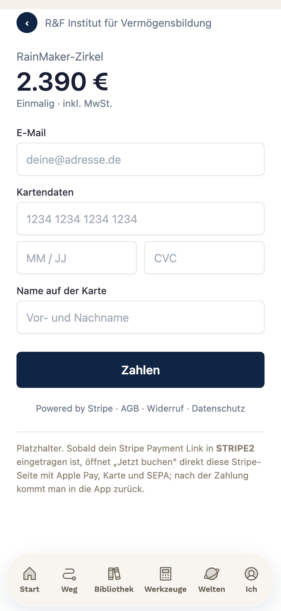
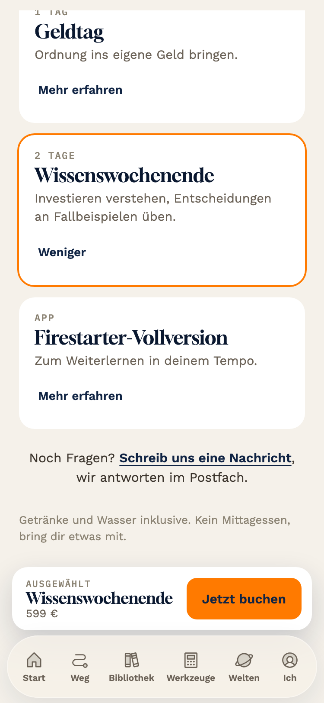
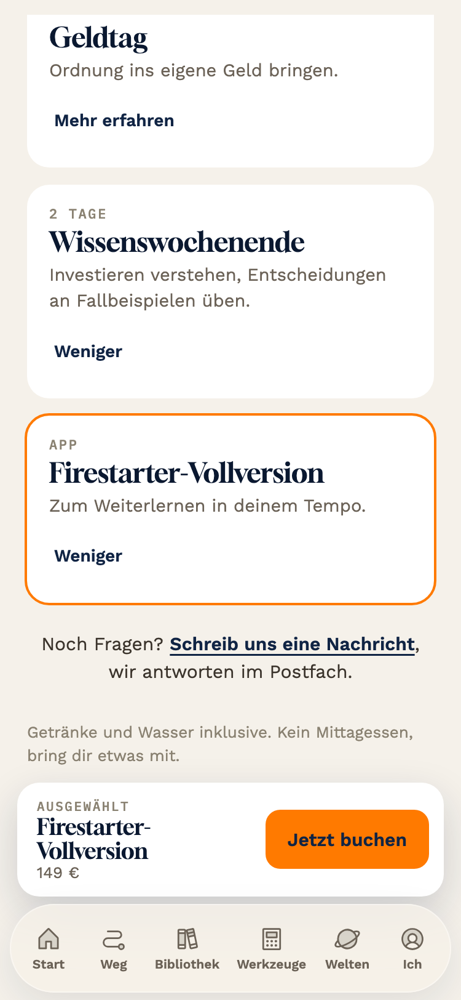
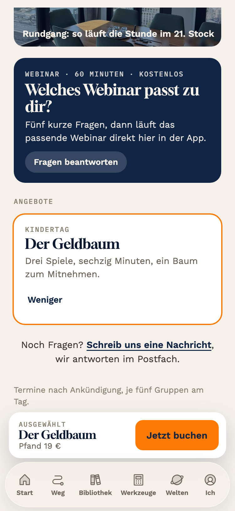
So läuft es: In jeder Welt unter dem Rundgang die dunkle Karte „Welches Webinar passt zu dir?". Fünf Fragen nacheinander („Worum geht es dir gerade?" und so weiter). Die Antworten werden gespeichert (im Mockup im Gerät unter fs_webinar, später auf dem Server, damit Brevo das passende Webinar schicken kann). Dann „Dein Webinar: Vom Zuschauen zum eigenen Regelwerk, 60 Minuten", E-Mail eintragen, „Webinar zuschicken". Danach „Dein Webinar ist unterwegs" mit dem Video zum sofortigen Ansehen und „Zurück zur Blauen Welt".
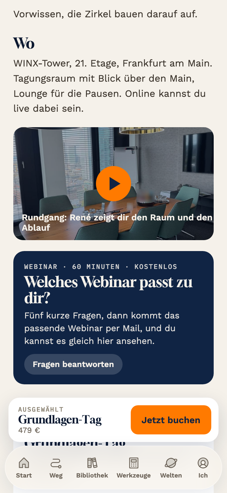
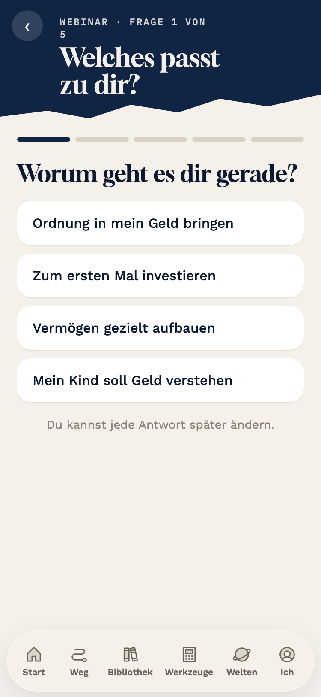
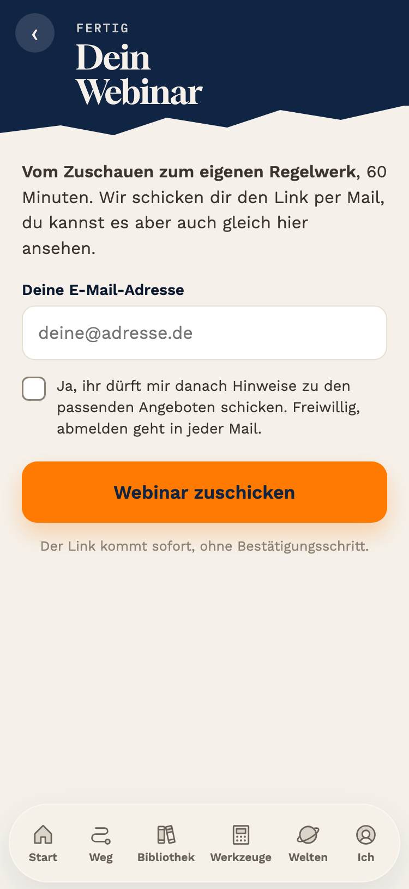
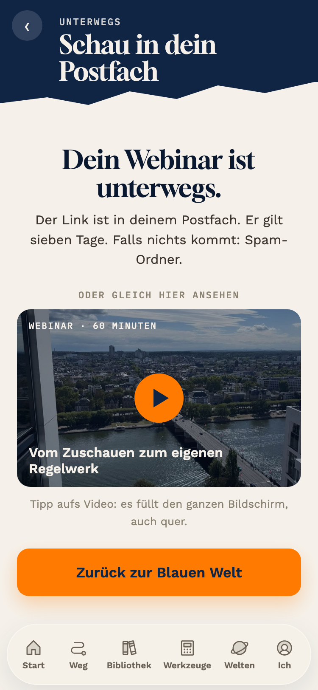
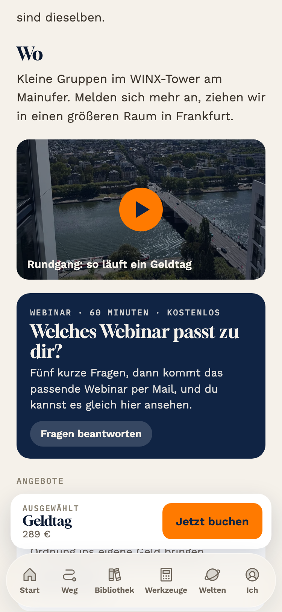
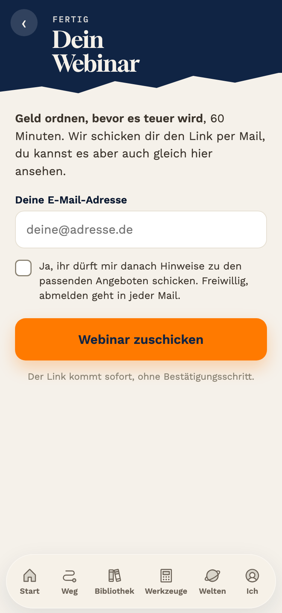
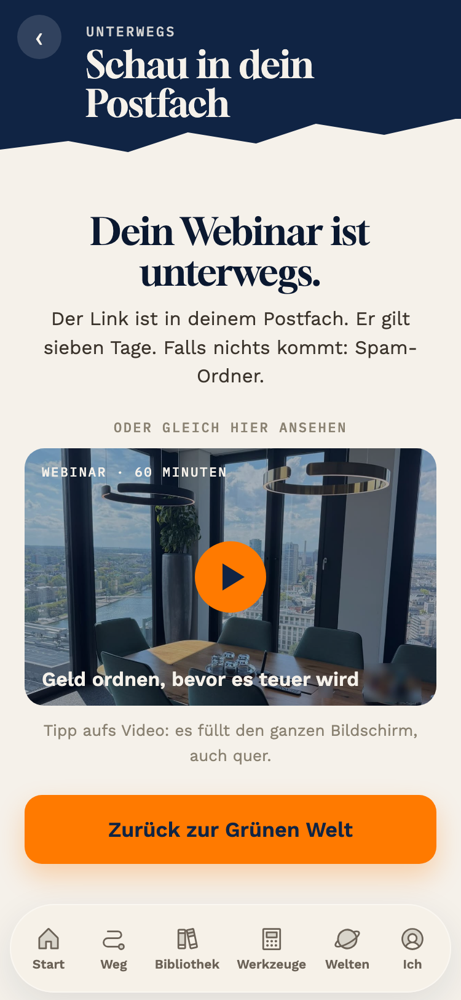
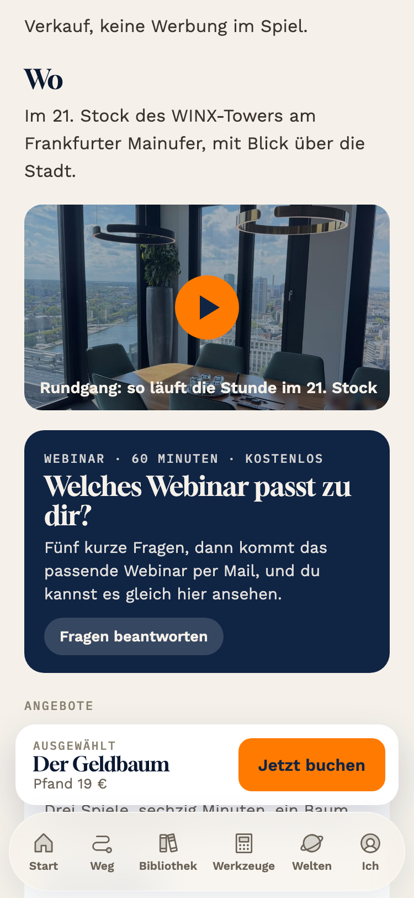
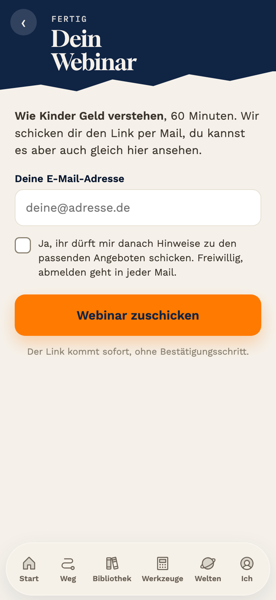
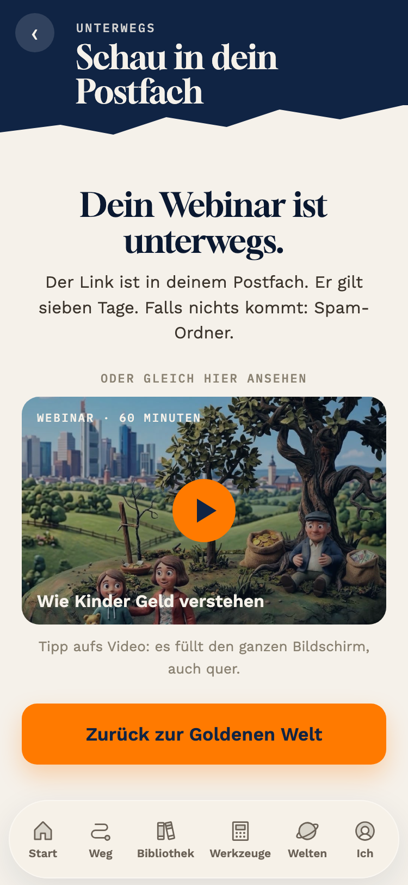
Tipp auf ein Video: Es füllt das ganze Gerät, Handy oder iPad. Dreht man das Gerät, läuft es im Querformat über die volle Breite. Schließen über das Kreuz oben rechts. Im Mockup läuft das 8-Sekunden-Beispielvideo; am iPhone nutzt die echte App den Vollbildspieler von Safari (webkitEnterFullscreen), auf anderen Geräten die Vollbild-Schnittstelle des Browsers. [ungeprüft am Gerät: ob Safari in der Web-App das Drehen zulässt, zeigt dein Test]
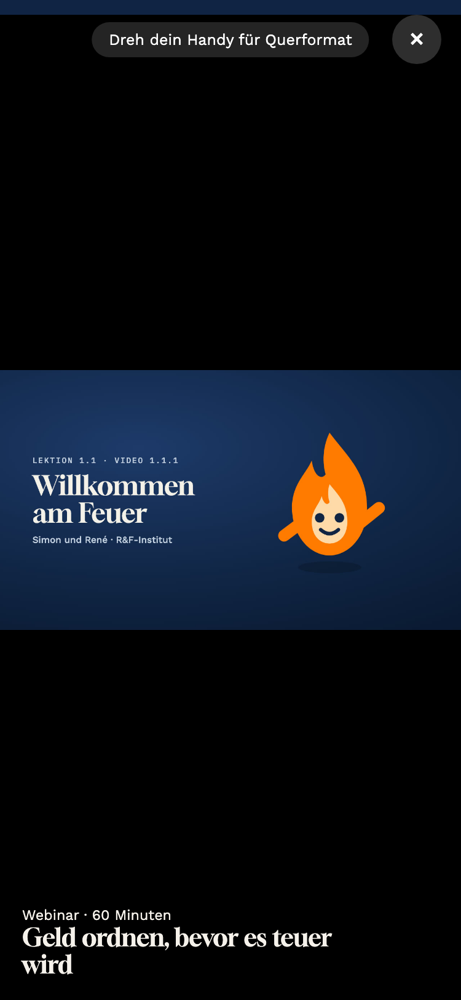
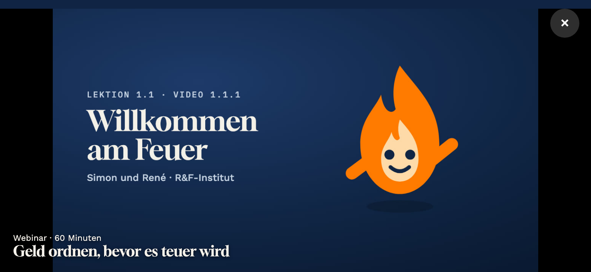
Nein, nicht für das Webinar selbst. Wer seine Adresse eingibt und „Webinar zuschicken" tippt, bestellt genau diese eine Mail. Das ist eine angeforderte Zustellung, dafür braucht es kein Double-Opt-in. Im Mockup steht deshalb jetzt „Der Link kommt sofort, ohne Bestätigungsschritt".
Ja, sobald ihr danach Werbung schicken wollt. Die alte Fassung hatte ein Pflicht-Häkchen „schickt mir danach Hinweise zu den Angeboten" vorangekreuzt. Dafür braucht es eine nachweisbare Einwilligung, und der übliche Nachweis ist die Bestätigungs-Mail (Double-Opt-in). Darum stand sie dort. Jetzt ist das Häkchen freiwillig und leer; nur wer es setzt, bekommt Brevo-Mails zu Angeboten, und nur dafür schickt Brevo eine Bestätigung. Ohne Häkchen kommt nur der Webinar-Link. [Trainingswissen, Stand 2026; ein Satz, kein Gate]
Technik dahinter: Mailversand und Speichern der Antworten brauchen einen Server (das Flask-Backend der echten App) mit Brevo-Schlüssel. Aus der statischen Mockup-App geht beides nicht; im Mockup sind es Platzhalter.
Angebote antippen, Leiste beobachten, „Jetzt buchen", Webinar-Karte, Fragen, Mail, Video im Vollbild drehen.